Mexca performance - video
Mexca’s video subcomponent is based on Py-feat. Py-feat includes pre-trained models for Action Unit detection, emotion detection, Face and Landmark detection and identification.
In this notebook, we evaluate mexca/Py-feat performance on face detection and identification. We aim at answering the following questions:
Q1: Is performance affected by the number of faces in a video?
Q2: Is performance influenced by how long one face is presented compared to the others?
The test dataset
We have applied mexca’s video pipeline on a dataset provided by the project partner. The dataset is made of excerpts of a video lasting ~1:44:00. The excerpts (named ‘shots’ in the annotation file) are ~ 1500 and last from 22 frames to over 1000 frames.
From this dataset, we have created 10 videos lasting from 00:24 to 2:17 and featuring from 1 to 10 individuals.
This is an example of a video featuring two individuals:
embedr::embed_video('total/2_speaker_total.mp4')The videos are build by selecting and concatenating shots of the most frequent individuals from 1 to 10, as reported by a human annotator in the reference file loaded below.
camera_shots_annotation <- read.csv("camera_shots_annotation.csv", header = T)Each shot is composed of a variable number of frames. The shots are all 25fps, thus a frame is 1/25 = 0.04
camera_shots_annotation |>
dplyr::group_by(filename) |>
dplyr::summarise(frames = mean(frames)) |>
dplyr::mutate(seconds = frames * 0.04) # A tibble: 1,053 × 3
filename frames seconds
<chr> <dbl> <dbl>
1 camera shots_Sub_01 180 7.2
2 camera shots_Sub_02 291 11.6
3 camera shots_Sub_03 29 1.16
4 camera shots_Sub_04 335 13.4
5 camera shots_Sub_05 82 3.28
6 camera shots_Sub_06 266 10.6
7 camera shots_Sub_07 73 2.92
8 camera shots_Sub_08 291 11.6
9 camera shots_Sub_09 74 2.96
10 camera shots_Sub_10 146 5.84
# … with 1,043 more rowsThe majority of the shots includes annotations of one single person at a time, and of max 3 individuals at a time:
camera_shots_annotation$n_faces <- rowSums(!is.na(camera_shots_annotation[,c("face_1", "face_2", "face_3")]))
table(camera_shots_annotation$n_faces)
0 1 2 3
151 755 76 71 We can answer Q1 by evaluating mexca’s performance on videos featuring (1) individuals who are alone in the frame, or (2) are together with other people. From the annotation structure above, we know however that for (2) we can evaluate the performance for min = 2 to max = 3 people at a time only.
Among all the individuals, we have excluded individuals who were not frequently annotated. This led us to have 10 people.
sort(table(camera_shots_annotation$face_1), decreasing = T)
Rutte Marijnissen Hoekstra Wilders Klaver Kaag
146 106 102 97 93 86
mod_m mod_f citizen4 citizen1 citizen3 citizen6
61 57 28 27 27 24
citizen5 citizen2_f group citizen2_m
23 20 3 2 Mexca’s output
We read in the relevant columns in mexca output which allow us to compute performance for face detection and identification.
output_files <- list.files('output/with_n_clusters/')
shot_df <- data.frame()
for(file in output_files){
ded21 <- read.csv(paste0("output/with_n_clusters/",file),stringsAsFactors = T, header = T, dec = ".", na.strings = ' ')
ded21 <- ded21[,c("frame", "time","face_prob", "face_landmarks", "face_aus", "face_id")]
ded21 <- unpack_face_landmarks(ded21)
ded21 <- unpack_face_aus(ded21)
ded21 <- ded21 |> dplyr::filter_all(dplyr::any_vars(!is.na(.)))
ded21$file <- as.factor(file);
shot_df <- dplyr::bind_rows(shot_df, ded21)
}
shot_df <- unique(shot_df)
head(shot_df[,c("frame","time","face_id","face_prob","file")]) frame time face_id face_prob file
1 0 0.00000000 0 0.9934897 1_speaker_contemporary.csv
2 1 0.03987241 0 0.9980152 1_speaker_contemporary.csv
3 2 0.07974482 0 0.9994476 1_speaker_contemporary.csv
4 3 0.11961722 0 0.9989092 1_speaker_contemporary.csv
5 4 0.15948963 0 0.9984949 1_speaker_contemporary.csv
6 5 0.19936204 0 0.9985183 1_speaker_contemporary.csvWe add to mexca’s output the column shot_id and filename indicating the shots that made each video in the file/video_name column. Moreover, we also add in the column n the order in which the shots were concatenated. This info is useful in order to understand who was displayed when.
input_files <- c(list.files('total', full.names = T), list.files('contemporary', full.names = T))
input_files <- input_files[grepl('.txt', input_files)]
input_files <- input_files[!grepl('3_speaker_contemporary.txt|2_speaker_contemporary.txt', input_files)]
final <- data.frame()
for(file in input_files){
shot_numbers <- NULL
file_names <- NULL
input <- read.csv(file, header = F)
shot_numbers_ <- regmatches(input$V1, gregexpr("[[:digit:]]+", input$V1))
file_names <- append(file_names, paste0(gsub("contemporary/|total/|.txt","",file),".csv"))
for (i in 1:length(shot_numbers_)){
shot_numbers <- append(shot_numbers, shot_numbers_[[i]][2])
}
temp <- data.frame(video_name = file_names, shot_id = shot_numbers,
filename = paste0('camera shots_Sub_',shot_numbers),
n = 1:length(shot_numbers_))
final <- rbind(final, temp); rm(temp)
}
final$video_name <- as.factor(final$video_name); final$shot_id <- as.integer(final$shot_id); final$filename <- as.factor(final$filename)
summary(final) video_name shot_id filename
10_speaker_total.csv:20 Min. : 11.0 camera shots_Sub_120: 2
9_speaker_total.csv :18 1st Qu.: 309.5 camera shots_Sub_300: 2
8_speaker_total.csv :16 Median : 541.0 camera shots_Sub_304: 2
7_speaker_total.csv :14 Mean : 540.5 camera shots_Sub_496: 2
6_speaker_total.csv :12 3rd Qu.: 811.8 camera shots_Sub_515: 2
5_speaker_total.csv :10 Max. :1050.0 camera shots_Sub_601: 2
(Other) :20 (Other) :98
n
Min. : 1.0
1st Qu.: 3.0
Median : 7.0
Mean : 7.5
3rd Qu.:11.0
Max. :20.0
Adding the filename and shot_id columns allow us to merge the annotation file with the info abour mexca’s video. We save this new annotation dataframe as video_annotation.
video_annotation <-merge(camera_shots_annotation, final, by = c('filename', 'shot_id'))
video_annotation <- video_annotation[,c('filename','n','face_1','face_2','face_3','b_frame','duration','end_frame','video_name', 'frames')]
head(video_annotation) filename n face_1 face_2 face_3 b_frame
1 camera shots_Sub_1020 7 Marijnissen <NA> <NA> 2022-10-24 01:41:01
2 camera shots_Sub_1032 2 Kaag <NA> <NA> 2022-10-24 01:41:50
3 camera shots_Sub_1038 10 Wilders <NA> <NA> 2022-10-24 01:42:33
4 camera shots_Sub_1047 8 Kaag <NA> <NA> 2022-10-24 01:43:29
5 camera shots_Sub_1050 8 Marijnissen <NA> <NA> 2022-10-24 01:43:41
6 camera shots_Sub_11 4 Marijnissen <NA> <NA> 2022-10-24 00:01:10
duration end_frame video_name frames
1 4.00 2022-10-24 01:41:05 6_speaker_total.csv 145
2 3.84 2022-10-24 01:41:54 5_speaker_total.csv 90
3 4.13 2022-10-24 01:42:37 5_speaker_total.csv 167
4 3.99 2022-10-24 01:43:33 10_speaker_total.csv 99
5 2.10 2022-10-24 01:43:43 8_speaker_total.csv 60
6 10.89 2022-10-24 00:01:21 4_speaker_total.csv 264We now have a long dataframe format, however for our analysis is easier to handle a wide format, so we change it to get a row frame by frame. This is how it looks like now:
video_annotation_wide <- pivot_wider_video_annotation(video_annotation)
head(video_annotation_wide[,c("filename","face_1","frame")]) filename face_1 frame
79 camera shots_Sub_691 Hoekstra 0
79.1 camera shots_Sub_691 Hoekstra 1
79.2 camera shots_Sub_691 Hoekstra 2
79.3 camera shots_Sub_691 Hoekstra 3
79.4 camera shots_Sub_691 Hoekstra 4
79.5 camera shots_Sub_691 Hoekstra 5The names of the people displayed in the video are in the face_1 column. These are character strings of the real names of the dutch politicians within the video. Mexca, however, won’t know their real name, and will label them with numbers going from 0 (i.e., 1 person) to 9 (i.e., 10 people).
How can we establish the correspondence between the labels given by the model (i.e., the numbers) and the labels given by the human annotator?
We solve this assignment problem by first using the custom made add_face_id_to_reference function to convert all names within video file into its corresponding number (e.g., in the video with two speakers, Rutte and Klaver will be 0 and 1, respectively). We append this info in the face_label column.
video_annotation_wide_labeled <- add_face_id_to_reference(video_annotation_wide)
head(video_annotation_wide_labeled[,c("filename","face_1","frame","face_label")]) filename face_1 frame face_label
79 camera shots_Sub_691 Hoekstra 0 0
79.1 camera shots_Sub_691 Hoekstra 1 0
79.2 camera shots_Sub_691 Hoekstra 2 0
79.3 camera shots_Sub_691 Hoekstra 3 0
79.4 camera shots_Sub_691 Hoekstra 4 0
79.5 camera shots_Sub_691 Hoekstra 5 0We then now use the custom made minMatching function to find the optimal mapping between the integer labels from the reference and the integer labels from the model. The optimal mapping is done by the function lp.assign of the lpSolve package which has been designed specifically for solving assignment problems between integer vectors. Under the hood, it implements a variation of the hungarian method.
Once found the optimal match, we store the reference’s mapping that best match the mexca’s mapping (column face_id) into the column mapped_reference. We save this new file as mexca_opt_mapping.
#simplify mexca's output by selecting only the relevant columns
colnames(shot_df)[colnames(shot_df)=="file"] <- 'video_name'
mexca_video_output <- shot_df[,c('frame','face_id','video_name')]
merge(video_annotation_wide_labeled, na.omit(mexca_video_output), by = c("video_name", "frame"), all = FALSE) -> temp
unique(temp$video_name) -> videos
mexca_opt_mapping <- NULL
for (video in videos){
sub_temp <- droplevels(temp[temp$video_name == video,])
mapping <- minMatching(reference = sub_temp$face_label,
model = sub_temp$face_id)
# init the column
sub_temp$mapped_reference <- -1
optimal_labels <- colnames(mapping)[max.col(mapping, "first")]
for(x in 1:length(optimal_labels)){
sub_temp[sub_temp$face_label == x-1 ,]$mapped_reference <- optimal_labels[x]
}
mexca_opt_mapping <- dplyr::bind_rows(mexca_opt_mapping, sub_temp)
}
mexca_opt_mapping$mapped_reference <- as.factor(mexca_opt_mapping$mapped_reference)
head(mexca_opt_mapping[, c("video_name","face_1","face_id","mapped_reference")]) video_name face_1 face_id mapped_reference
1 1_speaker_contemporary.csv Rutte 0 0
2 1_speaker_contemporary.csv Rutte 0 0
3 1_speaker_contemporary.csv Rutte 0 0
4 1_speaker_contemporary.csv Rutte 0 0
5 1_speaker_contemporary.csv Rutte 0 0
6 1_speaker_contemporary.csv Rutte 0 0We are now ready to compute our performance scores. We are mainly interested in the f1 score per individual, but we will also get the total accuracy per video. In R, the caret package takes care of computing these metrics, and so we will be using it. Note that for the video whereby there is only 1 speaker, the f1 score will be equivalent to the Accuracy score (i.e., they are synonyms) and it will inevitably be 1 (i.e., 100% accuracy). For the video with two speakers, we will get only 1 f1 score, as the classification is binary (i.e., either 0 or 1). We will get multiple f1_scores per individual from n > 3. We save these results into one single file named video_performance.
videos <- unique(mexca_opt_mapping$video_name)
video_performance <- NULL
for(video in videos){
sub_video <- droplevels(mexca_opt_mapping[mexca_opt_mapping$video_name == video,])
mapping <- as.data.frame(table(sub_video$face_1, sub_video$mapped_reference))
mapping <- subset(mapping, Freq >1)
colnames(mapping) <- c("true_label","mapped_ref","Freq")
mapping <- mapping[,c("true_label","mapped_ref")]
result <- caret::postResample(pred = as.factor(sub_video$mapped_reference), obs = as.factor(sub_video$face_id))
f1_by_speaker <- NULL
if(!(video %in% c("2_speaker_total.csv", "1_speaker_contemporary.csv"))){
f1_by_speaker <- caret::confusionMatrix(as.factor(sub_video$face_id), as.factor(sub_video$mapped_reference), mode = "prec_recall")$byClass[,"F1"]
names(f1_by_speaker)[which(names(f1_by_speaker) == paste0("Class: ",mapping$mapped_ref))] <- as.character(mapping$true_label)
}
result <- as.data.frame(result) |>
tibble::rownames_to_column("score") |>
tidyr::pivot_wider( names_from = score, values_from = result)
if(!is.null(f1_by_speaker)){
result <- dplyr::bind_cols(result, f1_by_speaker)
result$speaker <- names(f1_by_speaker)
colnames(result)[3] <- "f1_score"
}
result$video_name <- video
video_performance <- dplyr::bind_rows(video_performance, result)
}New names:
New names:
New names:
New names:
New names:
New names:
New names:
New names:
• `` -> `...3`video_performance[video_performance$video_name == "1_speaker_contemporary.csv",]$speaker <- "Rutte"
video_performance[video_performance$video_name == "1_speaker_contemporary.csv",]$f1_score <- 1
video_performance[video_performance$video_name == "2_speaker_total.csv",]$speaker <- "Klaver"
video_performance[video_performance$video_name == "2_speaker_total.csv",]$f1_score <- unique(video_performance[video_performance$video_name == "2_speaker_total.csv",]$Accuracy)
video_performance <- video_performance |>
dplyr::add_row(Accuracy = video_performance[video_performance$video_name == "2_speaker_total.csv",]$Accuracy,
Kappa = video_performance[video_performance$video_name == "2_speaker_total.csv",]$Kappa,
video_name = "2_speaker_total.csv",
f1_score = unique(video_performance[video_performance$video_name == "2_speaker_total.csv",]$Accuracy),
speaker = "Rutte")
head(video_performance)# A tibble: 6 × 5
Accuracy Kappa video_name f1_score speaker
<dbl> <dbl> <chr> <dbl> <chr>
1 1 NA 1_speaker_contemporary.csv 1 Rutte
2 0.732 0.692 10_speaker_total.csv 0.941 citizen4
3 0.732 0.692 10_speaker_total.csv 0.759 mod_f
4 0.732 0.692 10_speaker_total.csv 0.572 Rutte
5 0.732 0.692 10_speaker_total.csv 0.574 Kaag
6 0.732 0.692 10_speaker_total.csv 0.992 MarijnissenAt this point we’re ready to add these metrics to mexca’s video performance dataframe. This way we will get the metrics, the n of speakers and the n of frames they are presented all in the same dataframe.
table_frames <- aggregate(frames ~ video_name + face_1, data = mexca_opt_mapping, unique)
table_frames$tot_frames <- table_frames$frames[,1] + table_frames$frames[,2]
colnames(table_frames)[colnames(table_frames) == "face_1"] <- "speaker"
mexca_video_performance <- dplyr::left_join(video_performance, table_frames[,c("video_name","speaker","tot_frames")], by = c("video_name","speaker"))
mexca_video_performance <- mexca_video_performance |>
dplyr::group_by(video_name) |>
dplyr::mutate(n = dplyr::n())
mexca_video_performance <- na.omit(mexca_video_performance) #there are na's for those individuals that mexca did not find
head(mexca_video_performance)# A tibble: 6 × 7
# Groups: video_name [1]
Accuracy Kappa video_name f1_score speaker tot_frames n
<dbl> <dbl> <chr> <dbl> <chr> <int> <int>
1 0.732 0.692 10_speaker_total.csv 0.941 citizen4 191 10
2 0.732 0.692 10_speaker_total.csv 0.759 mod_f 1402 10
3 0.732 0.692 10_speaker_total.csv 0.572 Rutte 173 10
4 0.732 0.692 10_speaker_total.csv 0.574 Kaag 170 10
5 0.732 0.692 10_speaker_total.csv 0.992 Marijnissen 193 10
6 0.732 0.692 10_speaker_total.csv 0.0244 Hoekstra 158 10We’re ready now to analyse our results.
f1 score distribution
ggplot2::ggplot(mexca_video_performance, ggplot2::aes(as.factor(n), f1_score)) +
ggplot2::geom_violin(fill = "lightgray", col = NA) +
ggforce::geom_sina(shape = 21)+
ggplot2::scale_y_continuous(breaks=seq(0, 1, 0.2), limits=c(0, 1))+
ggplot2::ylab("f1 score") +
ggplot2::xlab("number of people displayed") +
ggplot2::geom_hline(yintercept = round(mean(mexca_video_performance$f1_score),2), linetype = "dashed", color = "red", size = 1) +
ggplot2::theme_classic()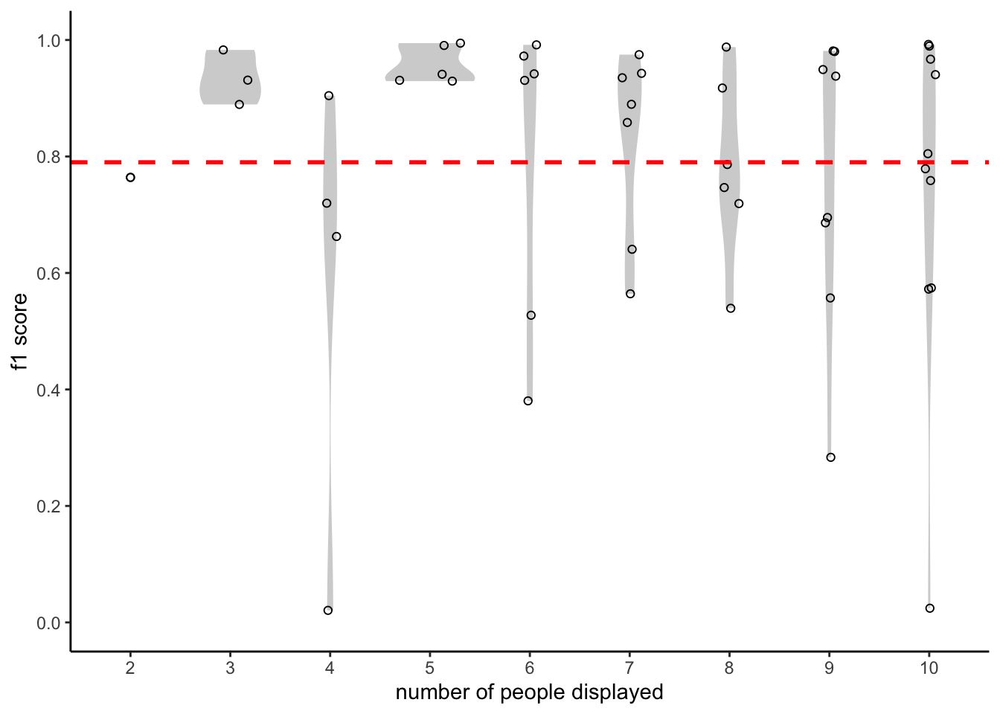
Partial residual plot
We isolate the contribution of the number of faces and frames (i.e., how long a face is displayed) by combining the prediction based on a single predictor (columns: n, tot_frames) with the actual residual from the full regression equation. Note that because of the skewed distribution in the n. of frames, we use a polynomial regression.
lm_ded21 <- lm(f1_score ~ n + poly(tot_frames, 3), data = mexca_video_performance)
anova(lm_ded21)Analysis of Variance Table
Response: f1_score
Df Sum Sq Mean Sq F value Pr(>F)
n 1 0.02388 0.023880 0.498 0.48395
poly(tot_frames, 3) 3 0.52020 0.173402 3.616 0.01995 *
Residuals 46 2.20591 0.047955
---
Signif. codes: 0 '***' 0.001 '**' 0.01 '*' 0.05 '.' 0.1 ' ' 1terms <- predict(lm_ded21, type = "terms")
partial_resid <- resid(lm_ded21) + terms # a partial residual is the ordinary residual plus the regression term associated with it
df_n <- data.frame(
n = mexca_video_performance[, "n"],
Terms = terms[, "n"],
PartialResid = partial_resid[, "n"]
)
df_frames <- data.frame(
n = mexca_video_performance[, "tot_frames"],
Terms = terms[, "poly(tot_frames, 3)"],
PartialResid = partial_resid[, "poly(tot_frames, 3)"]
)
p <- list()
p[[1]] <- ggplot2::ggplot(df_n, ggplot2::aes(n, PartialResid)) +
ggplot2::geom_point(shape = 1) +
ggplot2::scale_shape(solid = FALSE) +
ggplot2::geom_smooth(linetype = 2) +
ggplot2::geom_line(ggplot2::aes(n, Terms)) +
ggplot2::labs(title="number of speakers")
p[[2]] <- ggplot2::ggplot(df_frames, ggplot2::aes(tot_frames, PartialResid)) +
ggplot2::geom_point(shape = 1) +
ggplot2::scale_shape(solid = FALSE) +
ggplot2::geom_smooth(linetype = 2) +
ggplot2::geom_line(ggplot2::aes(tot_frames, Terms)) +
ggplot2::labs(title="number of frames")
do.call(gridExtra::grid.arrange,p) `geom_smooth()` using method = 'loess' and formula 'y ~ x'
`geom_smooth()` using method = 'loess' and formula 'y ~ x'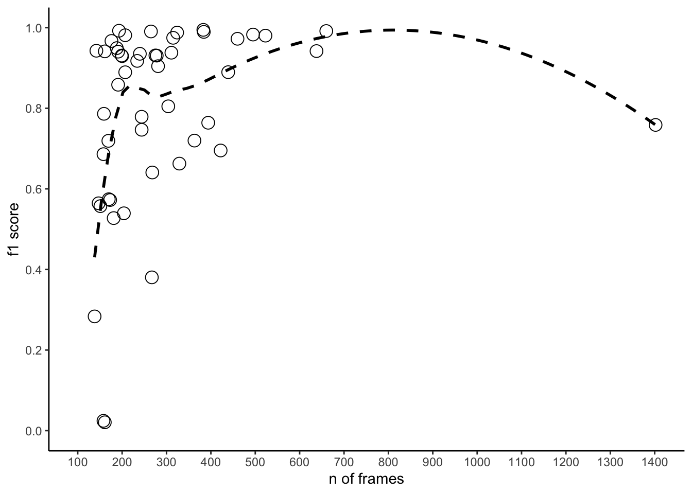
Confusion matrices
x <- unique(mexca_opt_mapping$video_name)
x <- x[gtools::mixedorder(as.character(x))]
p <- list()
for(i in 1:length(x)){
sub_video <- droplevels(mexca_opt_mapping[mexca_opt_mapping$video_name == x[i],])
mapping <- as.data.frame(table(sub_video$face_1, sub_video$mapped_reference))
mapping <- subset(mapping, Freq >1)
colnames(mapping) <- c("true_label","mapped_ref","Freq")
mapping <- mapping[,c("true_label","mapped_ref")]
confusion_matrix <- as.matrix(table(sub_video$face_id, sub_video$mapped_reference))
colnames(confusion_matrix)[which(colnames(confusion_matrix) == mapping$mapped_ref)] <- as.character(mapping$true_label)
rownames(confusion_matrix)[which(rownames(confusion_matrix) == mapping$mapped_ref)] <- as.character(mapping$true_label)
p[[i]]<- confusion_matrix|>
as.data.frame()|>
ggplot2::ggplot(ggplot2::aes(Var1, Var2, fill = Freq)) +
ggplot2::geom_tile(
colour = "white",
lwd = 0.1,
linetype = 1) +
ggplot2::geom_text(ggplot2::aes(label = round(Freq,1))) +
ggplot2::scale_fill_gradient(low="white", high="#009194")+
ggplot2::coord_fixed()+
ggplot2::guides(fill = ggplot2::guide_colourbar(title = "Frames"))+
ggplot2::ylab("True speaker label")+
ggplot2::xlab("Predicted speaker label")+
ggplot2::labs(title = paste0("n = ", i), caption="Dutch debate dataset 2021")+
ggplot2::theme(legend.position="right")
}for(i in 1:10){
print(p[[i]])
}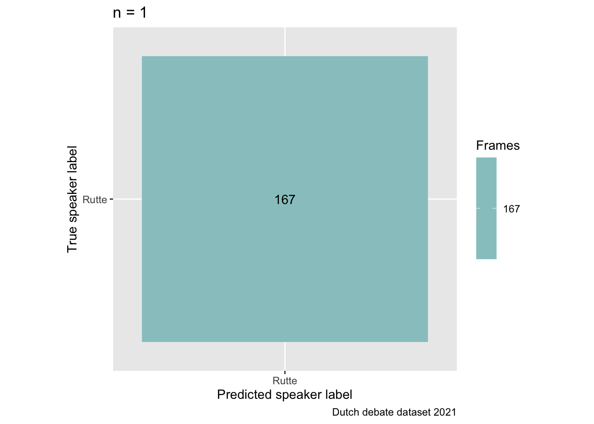
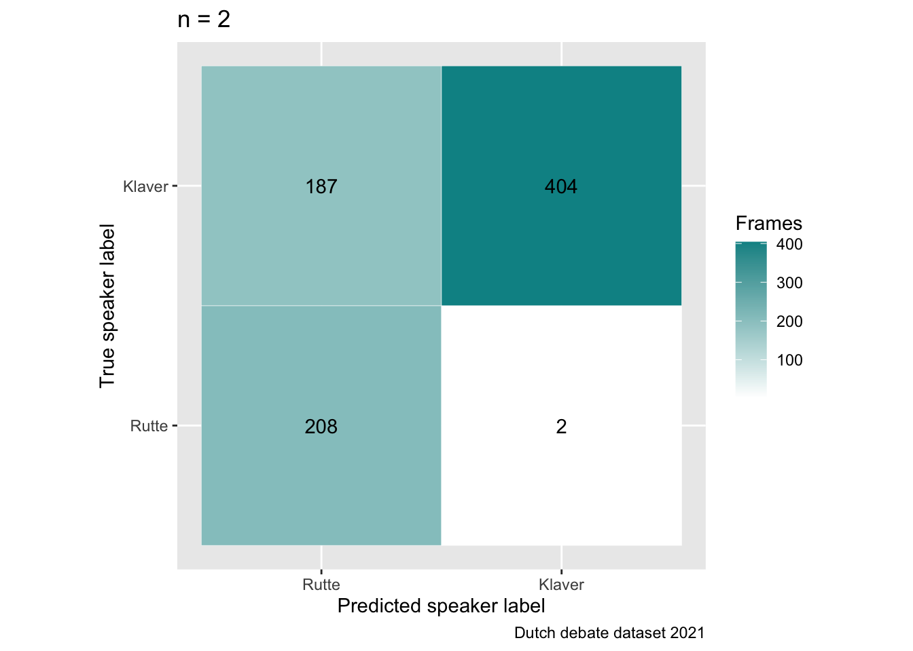
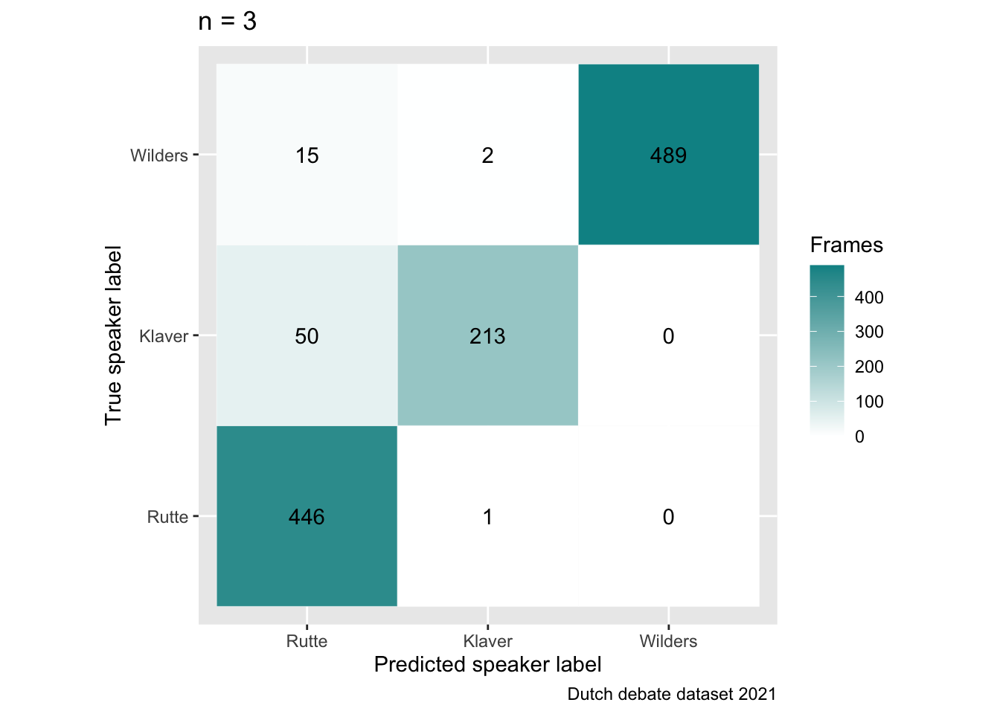
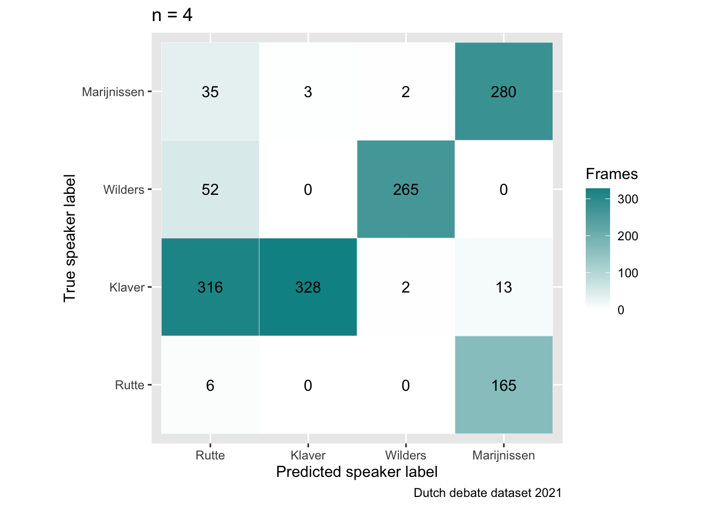
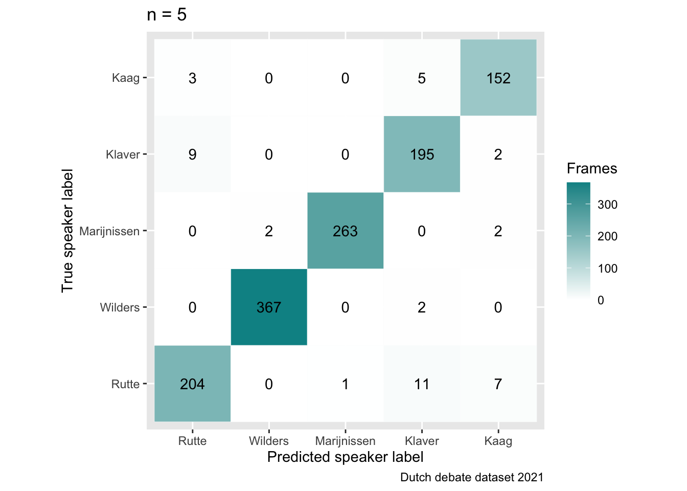
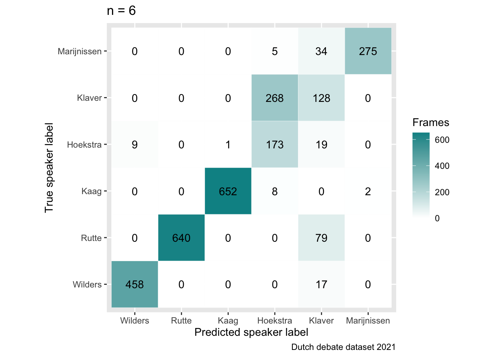
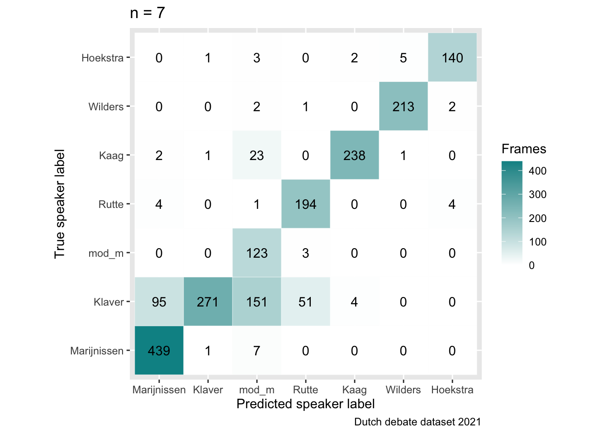
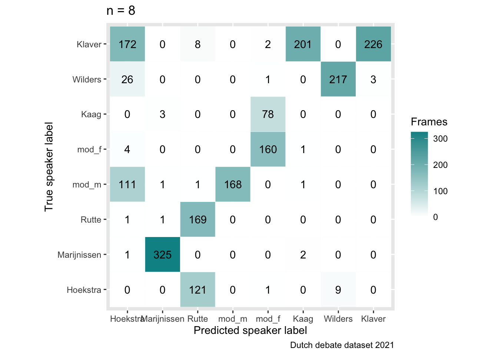
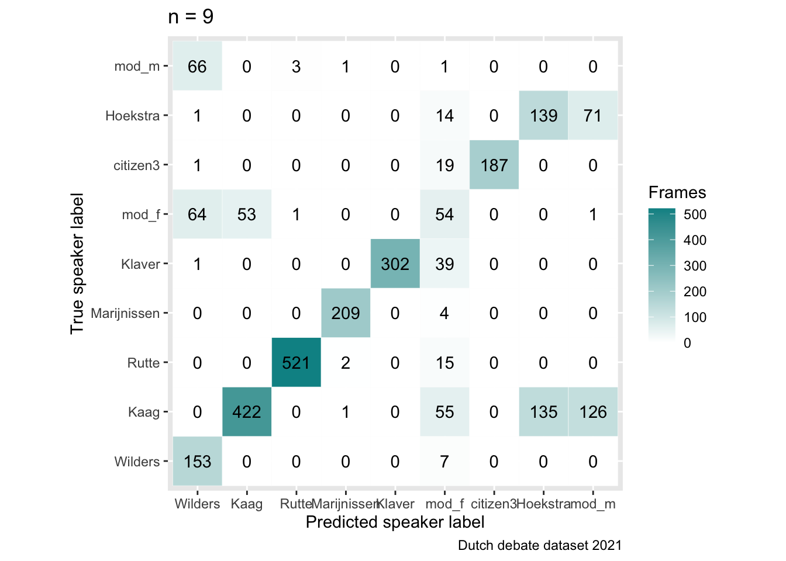
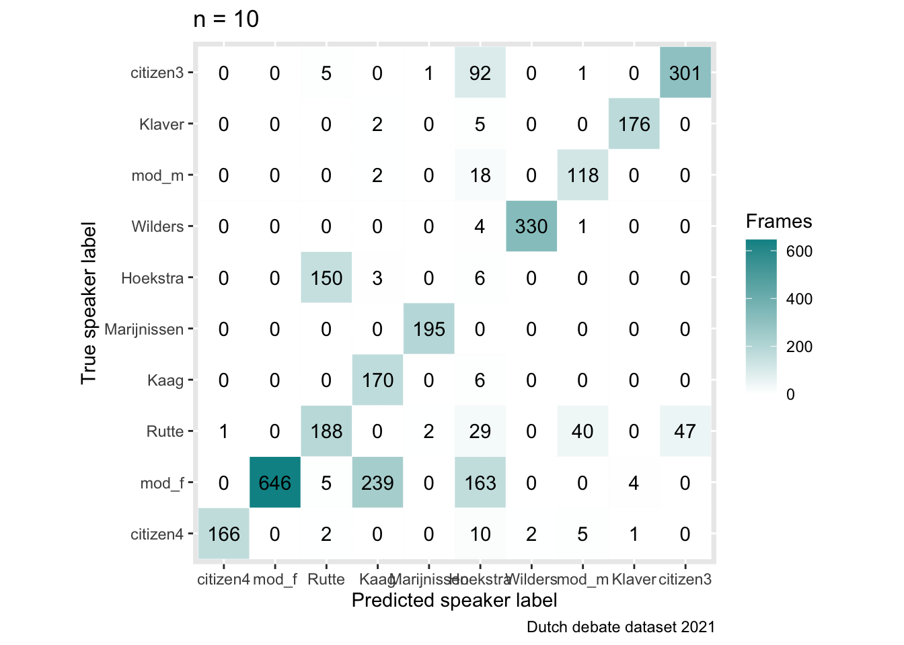
Q1: Is performance affected by the number of faces in a video?
Answer: No. Performance is constant across speakers (i.e., it is not influenced by n).
Q2: Is performance influenced by how long one face is presented compared to the others?
Answer: Yes. Performance is variable for very short segments (i.e., <100 frames, less than 4s) but it reaches a plateau from 250 frames (i.e., 10s).
Conclusion: Our results suggest that the video pipeline can be safely used for any number of speaker (up to the tested number of 10) without decreasing in performance, as long as they speak for at least 12s.